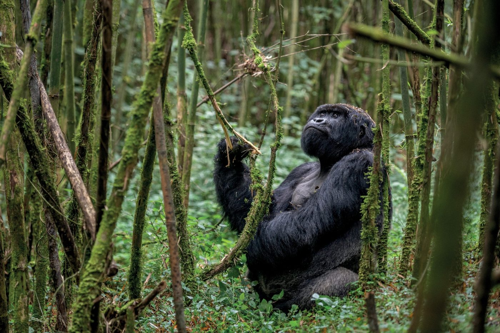
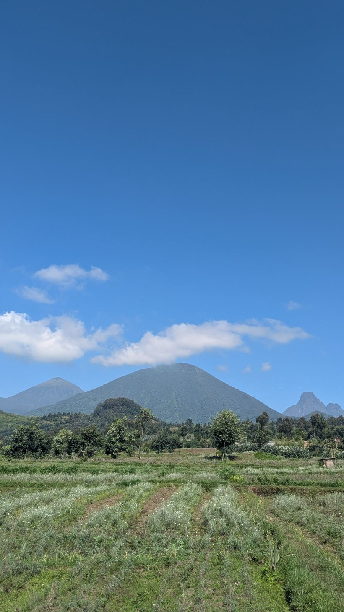
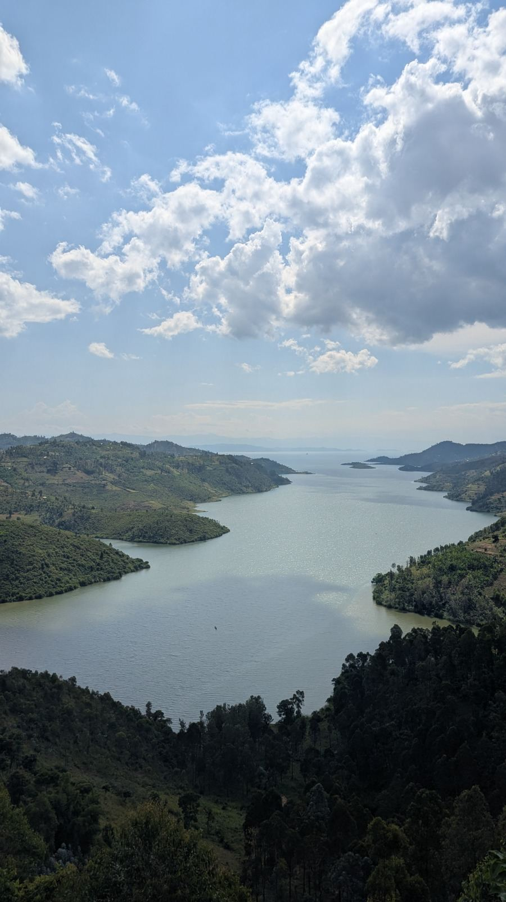
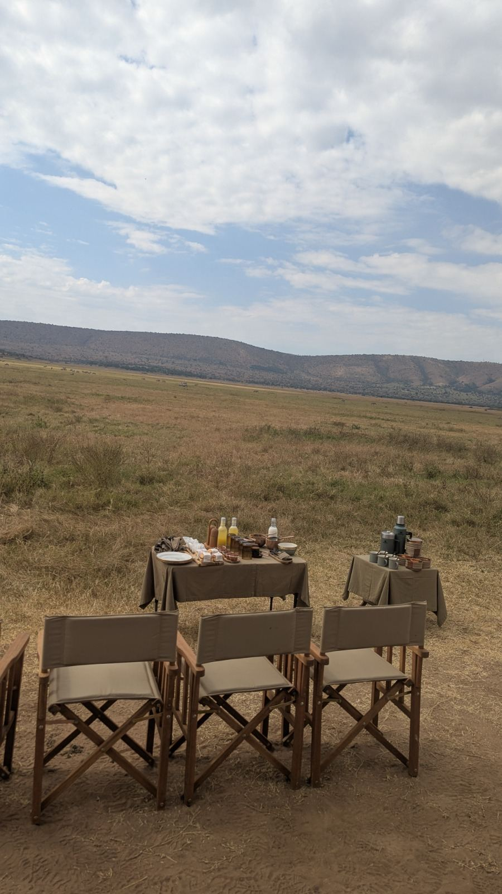
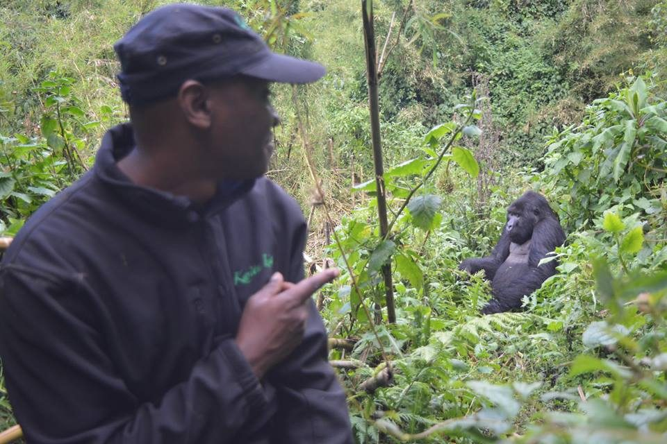

Tailored itineraries, trusted local partners and seamless ground handling, from the misty home of the mountain gorillas to the wider region, at fair and competitive rates.


Profile
A local who knows the way.

Experiences

Offers
Planning you can rely on.
My story

Contact
Let’s plan your journey.
Tell me when you would like to travel and what you would love to see. I will reply with a tailored plan.